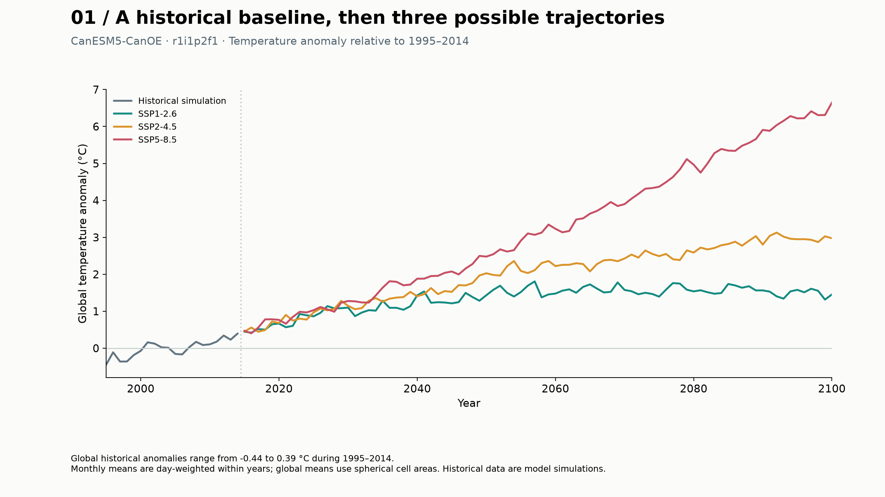
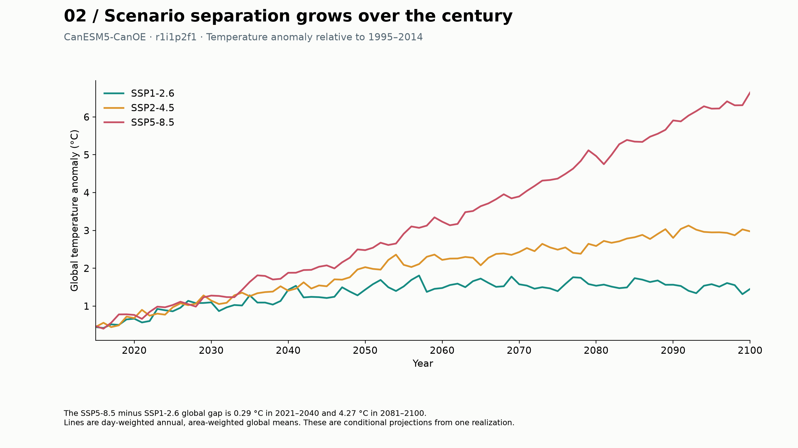
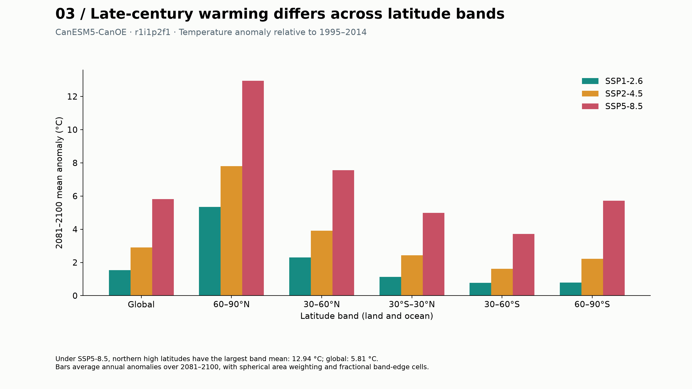
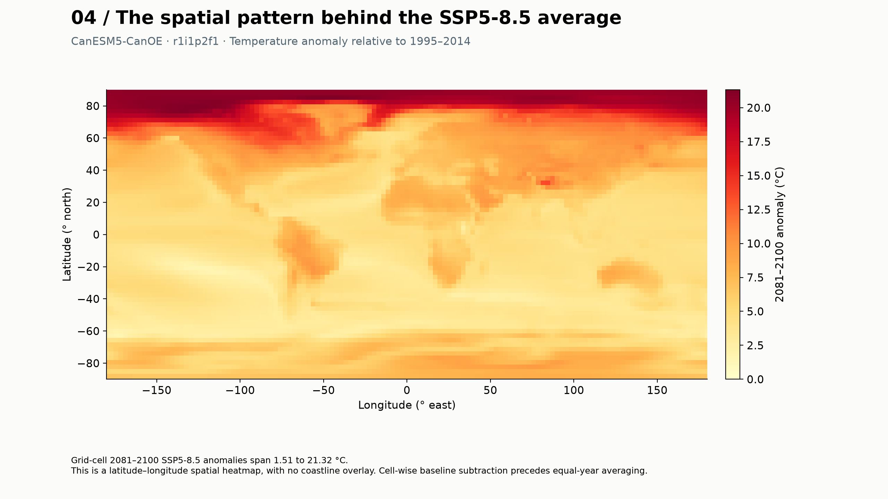
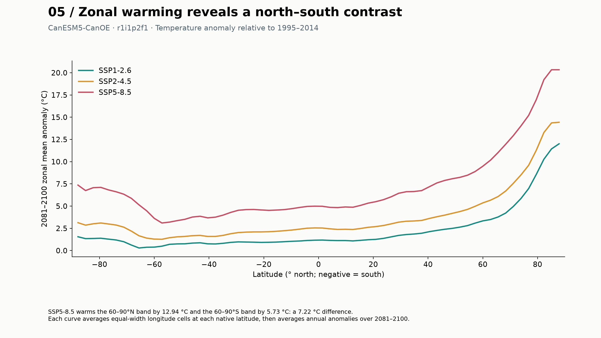
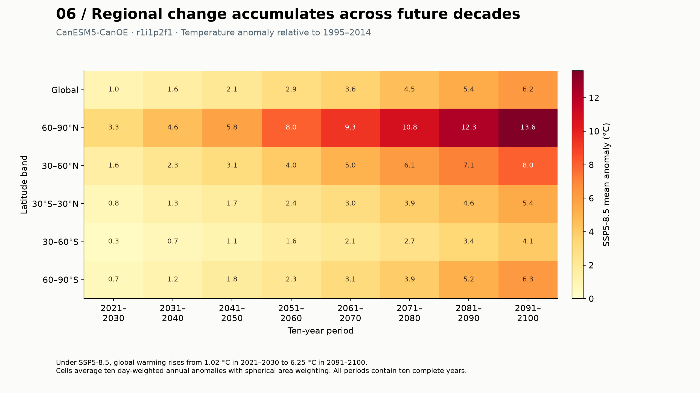

DSC 106 / PROJECT 03
[TEAM NAME]
Sadhana Tadepalli · Saahithi Myneedu
THE DATA
CanESM5-CanOE · r1i1p2f1 · gn · 64 × 128 cells
Monthly tas · historical + SSP1-2.6 / SSP2-4.5 / SSP5-8.5
1995–2014 historical baseline · 2015–2100 projections
Calendar-day annual means · published cell-area weights · six latitude views
One model realization. Land and ocean. No ensemble uncertainty.

Global historical anomalies range from -0.44 to 0.39 °C during 1995–2014.

The SSP5-8.5 minus SSP1-2.6 global gap is 0.29 °C in 2021–2040 and 4.27 °C in 2081–2100.

Under SSP5-8.5, northern high latitudes have the largest band mean: 12.94 °C; global: 5.81 °C.

Grid-cell 2081–2100 SSP5-8.5 anomalies span 1.51 to 21.32 °C.

SSP5-8.5 warms the 60–90°N band by 12.94 °C and the 60–90°S band by 5.73 °C: a 7.22 °C difference.

Under SSP5-8.5, global warming rises from 1.02 °C in 2021–2030 to 6.25 °C in 2091–2100.
LIVE PROTOTYPE
Select a band → hide a scenario → focus years → inspect → reset. Open full explorer ↗
PROGRESS & NEXT STEPS
✓ Real CMIP6 data and source records
✓ Six exploratory figures
✓ Interactive D3 comparison
Next: team review, usability feedback, narrated recording, and GitHub Pages publication.
Scope: one model realization; conditional projections, with no ensemble uncertainty.
Return to explorer ↗